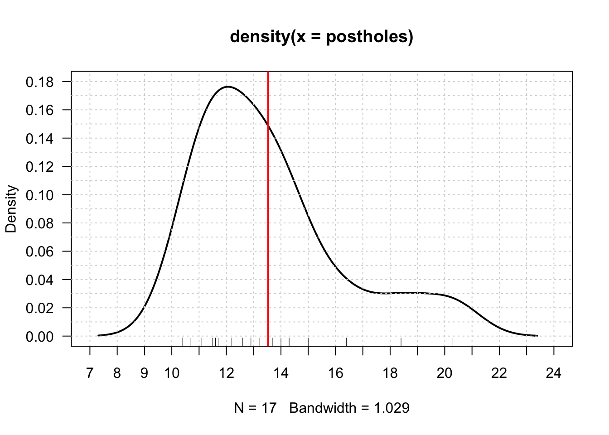
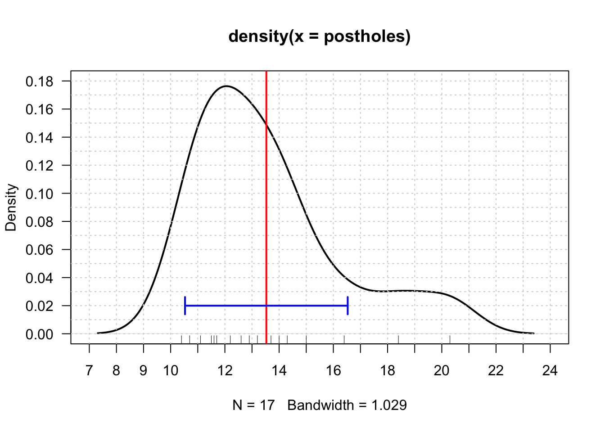
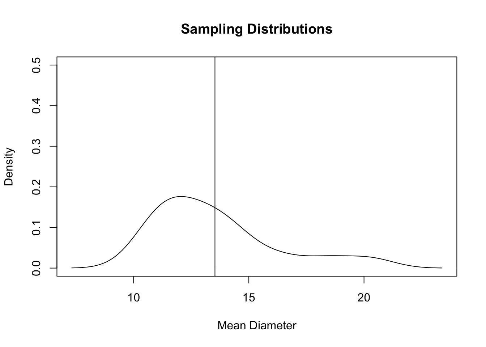
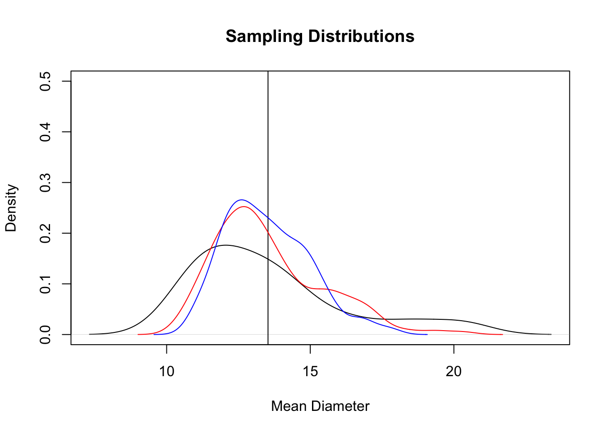
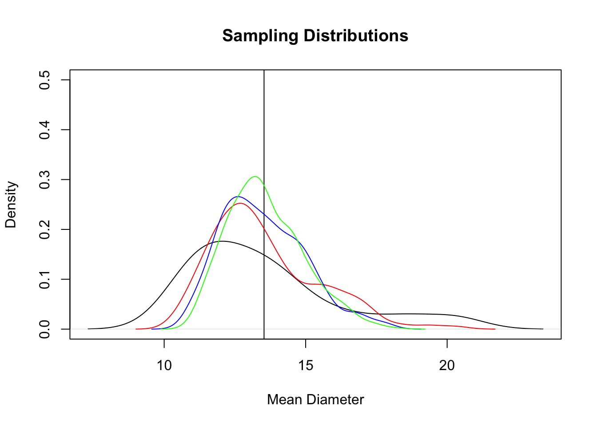
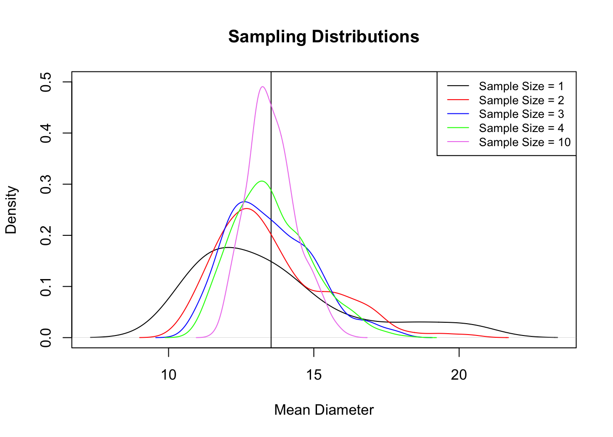

8 Different Samples from the Same Population (Ch. 8)
While random samples are not necessarily representative, they often simplify the process of considering just how likely it is (or isn’t) that a sample is representative. This makes it possible to quantify how confident we can be about inferences made from such samples. It also makes it possible to consider how likely particular kinds/degrees of nonrepresentativeness are to occur.
Drennan illustrates this with a table (8.1) of posthole diameters. You can easily calculate n, \(\mu\), and \(\sigma\) (and they match what Drennan provides!)
#postholes from Table 8.1
postholes <- c(10.4, 10.7, 11.1, 11.5, 11.6, 11.7, 12.2, 12.6, 12.9, 13.2, 13.7,
14.0, 14.3, 15.0, 16.4, 18.4, 20.3)
length(postholes)## [1] 17## [1] 13.52941## [1] 2.72529What happens as we begin to sample this population of 17 posthole diameters? We can easily construct a plot that illustrates the process Drennan describes of drawing single samples from this population.
We might begin by simply examining the data. A plot of the density of data puts the values of our data (the measured posthole diameters) on the x-axis, and their frequency on the y-axis, with an estimated curve (a kernel density estimate, though you needn’t worry about that for now) showing how common different values are.
plot(density(postholes), las = 1, xlim = c(7, 24), xaxp = c(7, 24, 17), ylim = c(0, .18),
yaxp = c(0, .18, 9), lwd = 2)
abline(h = c(0:18/100), v = c(7:24), lty = "dotted", col = "lightgray") # add a grid
rug(postholes) #add a "rug" - tickmarks above the x-axis identifying individual samples
abline(v = mean(postholes), lwd = 2, col = "red") # add a vertical line at the mean
It’s also useful to visualize the range of values that Drennan suggests might constitute acceptably accurate estimates of the mean. There’s nothing magic about his error of +/- 3cm; it’s just an arbitrary value that serves to illustrate how easy, or difficult, it might be estimate the mean.
arrows(mean(postholes)-3, .02, mean(postholes)+3, .02, length = .1, angle = 90,
code = 3, lwd = 2, col = "blue") #arrows() adds to existing plot
You can see what Drennan describes by looking at the rug plot - the tick marks at the bottom of the plot indicating measured posthole diameters - and noting how many of those values fall within the range indicated by the blue line. With a sample size of 1, as Drennan indicates, you can visually estimate that you would be reasonably likely to select a value that falls within the acceptable parameters.
If you wanted to evaluate this numerically as Drennan does, you could calculate the difference between each posthole diameter and the population mean:
## [1] -3.1294118 -2.8294118 -2.4294118 -2.0294118 -1.9294118 -1.8294118
## [7] -1.3294118 -0.9294118 -0.6294118 -0.3294118 0.1705882 0.4705882
## [13] 0.7705882 1.4705882 2.8705882 4.8705882 6.7705882As Drennan observes, and as you can see in the plot, postholes 1, 16, and 17 differ from the mean by more than 3cm.
Having explored the outcomes of drawing one sample from our population of 17 postholes, we can proceed to explore what happens when we draw larger samples. That we do by drawing random samples with replacement. We can subsequently consider - as Drennan describes - the distribution of the means of the samples we draw, paying particular attention to how many of them meet the criterion of falling within 3cm of the population mean.
Begin by establishing the basic plot:
plot(density(postholes), ylim = c(0, .5), xlab = "Mean Diameter",
main = "Sampling Distributions")
abline(v = mean(postholes))
Then, draw samples of given sizes 500 times (similar to Drennan’s “all possible samples of 2, samples of 3, etc” - but drawing only 500 rather than all possible), and create a kernel density plot for the aggregate of each sample size (added as lines of different colors to our basic plot).
We do this with a very useful function called sapply(), which we use to perform the same operation over and over again (500 times here) - in this case, take a sample (with replacement) of specified size (first 2, then 3, then 4, then 10), from ‘postholes’, then take the mean of that sample.
## [1] 13.5414## [1] 1.900916
## [1] 13.49233## [1] 1.464566
## [1] 13.57615## [1] 1.3394
## [1] 13.54618## [1] 0.8400728lines(density(samples10), col = "violet")
#add a legend to the final plot
legend("topright", c("Sample Size = 1", "Sample Size = 2", "Sample Size = 3",
"Sample Size = 4", "Sample Size = 10"), lty = 1,
col = c("black", "red", "blue", "green", "violet"), cex = .8)
The final plot shows that as the sample size increases from 1 (black) to 10 (violet) the distributions of the means of those samples change shape, becoming narrower and taller. That shape describes the distribution of the 500 means we took of samples of different sizes: it will always be centered on the population mean, and when those means are closer to the population mean and to each other, the shape will be taller and narrower. The means and standard deviations of the sample means (calculated along the way) provide another way of seeing the same thing: as the sample size increases from 1 to 10, the means remain similar, but the standard deviations shrink. Note that with larger samples the means are more symmetrical than the original data distribution. We shouldn’t expect the shapes of these curves to match - remember that the distribution of sample means should, especially as sample sizes get larger:
- be approximately centered on the population mean, and
- be normally distributed.
The sample means converge on the population mean, not the population distribution; see Drennan’s discussion of the central limit theorem (pp105-106).
Finally, calculate the standard error for different sample sizes.
## [1] 1.9270711 1.5734469 1.3626450 0.8618124